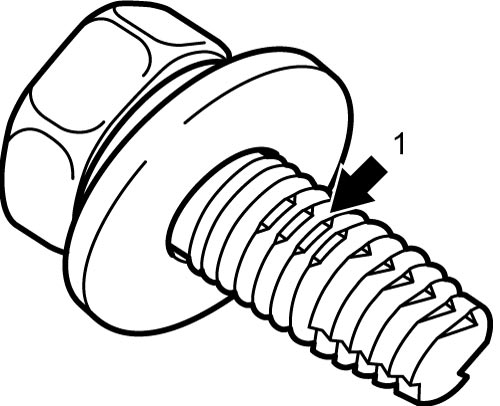

9A
| Reassembling Note for Wiring Harness |
Refer to Around Engine.
Refer to Around Battery.
Refer to Around Strut.
Refer to Around Instrument Panel.
Refer to Around Main Floor.
Refer to Around Rear End Door.
ESP®: ESP is a registered trademark of Daimler AG.
Ground Bolt Used on Painted Panels
The bolts are specially designed to get good metal-to-metal contact on painted panels.
Use the specified ground bolt.
Using an ordinary bolt can cause poor grounding on painted panels.
NOTICE:
Using this bolt on aluminum blocks will damage the screw hole of the block.
Never use this bolt on aluminum blocks.
NOTE:
This ground bolt is not used on the engine block, the transmission case or the steering column mounting bracket (non-painted). Identify the bolt with the paint-scratch shape (1) on the screw.

 "Expand image")